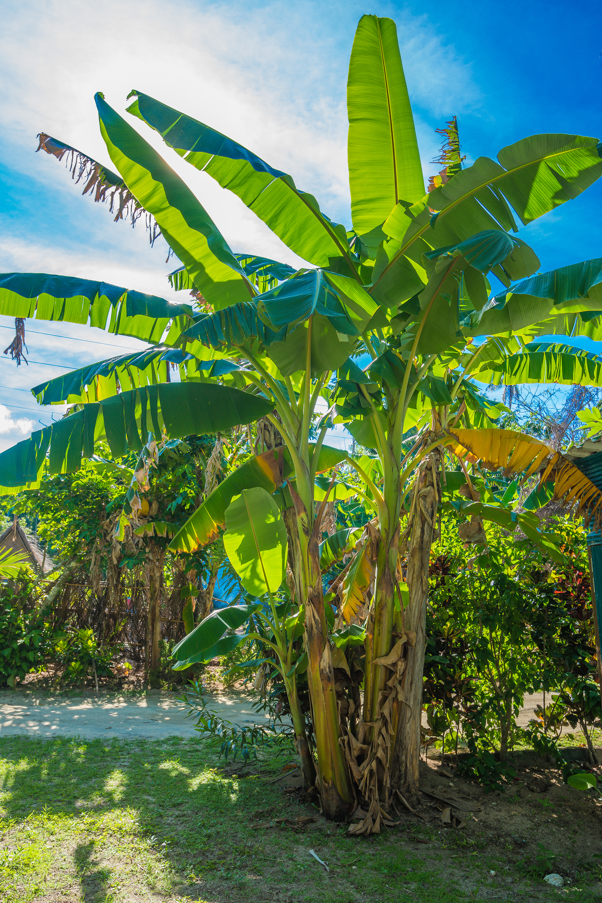
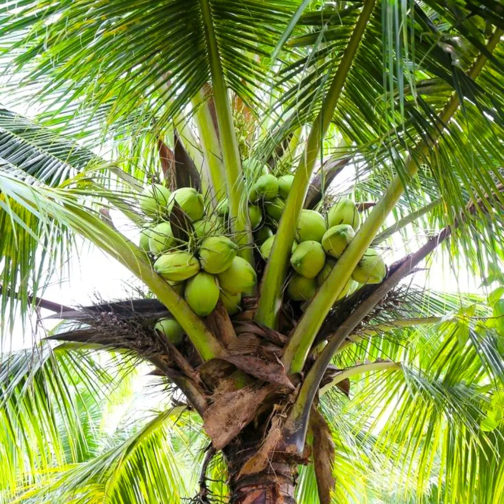
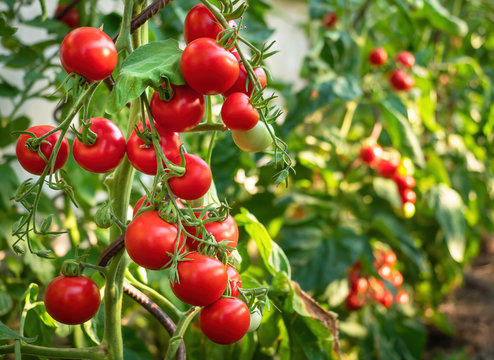
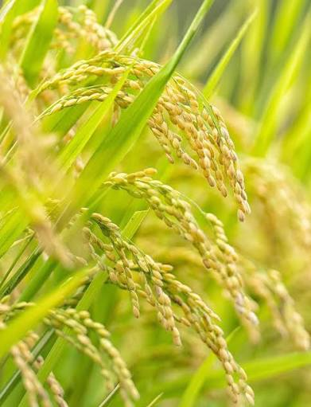
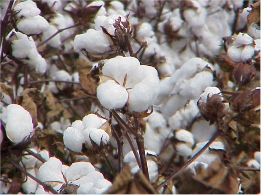

CROP GUIDANCE

🍌 வாழை பயிர் வழிகாட்டுதல்
நாங்கள் வாழை பயிருக்கு விதை நடவு முதல் அறுவடை வரை முழுமையான வழிகாட்டுதலை வழங்குகிறோம். மண் வளம், வேர் வளர்ச்சி, தண்டு வளர்ச்சி மற்றும் இலை ஆரோக்கியத்தை ஆய்வு செய்கிறோம். சத்து குறைபாடு, பூ உதிர்வு, காய் பிடிப்பு மற்றும் வளர்ச்சி தடைகளை கண்டறிகிறோம். பயிரின் வளர்ச்சி நிலைக்கு ஏற்ப இயற்கை உரங்கள் மற்றும் ஊட்டச்சத்துகளை பரிந்துரைக்கிறோம். Royal Gel, Banana Gold, Roots Rocket போன்ற தயாரிப்புகளை சரியான முறையில் பயன்படுத்த வழிகாட்டுகிறோம். நீர் மேலாண்மை, உரமிடும் கால அட்டவணை மற்றும் பராமரிப்பு முறைகளையும் விளக்குகிறோம். பூச்சி மற்றும் நோய் தாக்குதல்களை இயற்கை முறையில் கட்டுப்படுத்த ஆலோசனை வழங்குகிறோம். அதிக குலை எடை, தரமான பழங்கள் மற்றும் அதிக மகசூல் பெற தொடர்ந்து தொழில்நுட்ப ஆதரவை வழங்குகிறோம்.

🥥 தென்னை பயிர் வழிகாட்டுதல்
நாங்கள் தென்னை பயிரின் முழுமையான வளர்ச்சி மற்றும் மகசூலை மேம்படுத்த சிறப்பு வழிகாட்டுதலை வழங்குகிறோம். மண் வளம், வேர் வளர்ச்சி, புதிய பாளை வளர்ச்சி மற்றும் இலை ஆரோக்கியத்தை ஆய்வு செய்கிறோம். பூ உதிர்வு, காய் உதிர்வு மற்றும் சத்து குறைபாடுகளை கண்டறிகிறோம். Coconut Energy, Royal Gel, Boro Active போன்ற இயற்கை தயாரிப்புகளை பயிருக்கு ஏற்றவாறு பரிந்துரைக்கிறோம். உரமிடும் முறை, நீர் மேலாண்மை மற்றும் பராமரிப்பு குறித்து முழுமையான ஆலோசனை வழங்குகிறோம். பூச்சி மற்றும் நோய் தாக்குதல்களை இயற்கை முறையில் கட்டுப்படுத்த வழிகாட்டுகிறோம். காய் பிடிப்பு மற்றும் காய்களின் தரத்தை அதிகரிக்கும் முறைகளையும் கூறுகிறோம். ஆரோக்கியமான தென்னை தோட்டம் மற்றும் அதிக மகசூலுக்கு தொடர்ந்து தொழில்நுட்ப ஆதரவை வழங்குகிறோம்.

🥬 காய்கறி பயிர் வழிகாட்டுதல்
நாங்கள் அனைத்து வகையான காய்கறி பயிர்களுக்கும் முழுமையான இயற்கை விவசாய வழிகாட்டுதலை வழங்குகிறோம். தக்காளி, மிளகாய், கத்திரிக்காய், வெண்டை மற்றும் பிற காய்கறி பயிர்களின் வளர்ச்சி நிலையை ஆய்வு செய்கிறோம். மண்ணின் சத்து குறைபாடு, இலை மஞ்சள் மற்றும் வளர்ச்சி தடைகளை கண்டறிகிறோம். பூச்சி மற்றும் நோய் தாக்குதல்களுக்கு பாதுகாப்பான இயற்கை தீர்வுகளை வழங்குகிறோம். பயிரின் வளர்ச்சி நிலைக்கு ஏற்ப இயற்கை உரங்கள் மற்றும் நுண்ணூட்டச்சத்துகளை பரிந்துரைக்கிறோம். நீர் மேலாண்மை மற்றும் உர பயன்பாட்டு முறைகளை விளக்குகிறோம். பூக்கும் மற்றும் காய் பிடிக்கும் காலத்தில் தேவையான பராமரிப்பு முறைகளையும் கூறுகிறோம். தரமான காய்கறி மற்றும் அதிக மகசூல் பெற தொடர்ந்து தொழில்நுட்ப ஆதரவை வழங்குகிறோம்.

🌾 நெல் பயிர் வழிகாட்டுதல்
நாங்கள் நெல் பயிருக்கு விதைப்பு முதல் அறுவடை வரை முழுமையான பயிர் மேலாண்மை வழிகாட்டுதலை வழங்குகிறோம். மண்ணின் வளம், சத்து நிலை மற்றும் வேர் வளர்ச்சியை ஆய்வு செய்கிறோம். நெற்பயிரின் வளர்ச்சி குறைபாடுகள் மற்றும் நோய் தாக்குதல்களை கண்டறிகிறோம். இயற்கை உரங்களை சரியான காலத்தில் பயன்படுத்தும் முறையை விளக்குகிறோம். நீர் மேலாண்மை மற்றும் பாசன முறைகளை பரிந்துரைக்கிறோம். பூச்சி மற்றும் நோய் தாக்குதல்களுக்கு இயற்கை மேலாண்மை தீர்வுகளை வழங்குகிறோம். பயிரின் ஒவ்வொரு வளர்ச்சி நிலையிலும் தேவையான ஊட்டச்சத்து திட்டத்தை வழங்குகிறோம். தரமான நெல் மற்றும் அதிக மகசூல் பெற தொடர்ந்து தொழில்நுட்ப ஆதரவை வழங்குகிறோம்.

🌱 பருத்தி பயிர் வழிகாட்டுதல்
நாங்கள் பருத்தி பயிரின் வளர்ச்சி மற்றும் மகசூலை அதிகரிக்க முழுமையான வழிகாட்டுதலை வழங்குகிறோம். மண் வளம், வேர் வளர்ச்சி மற்றும் செடியின் ஆரோக்கியத்தை ஆய்வு செய்கிறோம். வெள்ளை ஈ, மைட் மற்றும் பிற பூச்சி தாக்குதல்களை கண்டறிகிறோம். இயற்கை முறையில் பூச்சி மேலாண்மை செய்ய தேவையான ஆலோசனைகளை வழங்குகிறோம். Cotton Whitefly Fighter, Beauveria மற்றும் பிற இயற்கை தயாரிப்புகளை பயன்படுத்தும் முறையை விளக்குகிறோம். சத்து குறைபாடுகளை சரிசெய்ய தேவையான இயற்கை ஊட்டச்சத்துகளை பரிந்துரைக்கிறோம். பூ உருவாக்கம் மற்றும் காய் வளர்ச்சியை மேம்படுத்தும் பராமரிப்பு முறைகளையும் கூறுகிறோம். அதிக மகசூல் மற்றும் தரமான பருத்தி உற்பத்திக்கு தொடர்ந்து தொழில்நுட்ப ஆதரவை வழங்குகிறோம்.

🍋 பழப்பயிர் வழிகாட்டுதல்
நாங்கள் அனைத்து வகையான பழப்பயிர்களுக்கும் முழுமையான பயிர் வழிகாட்டுதலை வழங்குகிறோம். மாம்பழம், கொய்யா, எலுமிச்சை, சப்போட்டா, முருங்கை உள்ளிட்ட பழப்பயிர்களின் வளர்ச்சி நிலையை ஆய்வு செய்கிறோம். வேர் வளர்ச்சி, இலை ஆரோக்கியம், பூ உருவாக்கம் மற்றும் காய் வளர்ச்சியை மதிப்பிடுகிறோம். சத்து குறைபாடுகளை கண்டறிந்து சரியான இயற்கை உரங்களை பரிந்துரைக்கிறோம். பூச்சி மற்றும் நோய் தாக்குதல்களுக்கு இயற்கை மேலாண்மை முறைகளை வழங்குகிறோம். பழங்களின் அளவு, நிறம், தரம் மற்றும் இனிப்புத்தன்மையை அதிகரிக்கும் ஆலோசனைகளை வழங்குகிறோம். நீர் மேலாண்மை மற்றும் உர பயன்பாட்டு முறைகளை விளக்குகிறோம். அதிக மகசூல் மற்றும் தரமான பழ உற்பத்திக்கான தொழில்நுட்ப ஆதரவை தொடர்ந்து வழங்குகிறோம்.